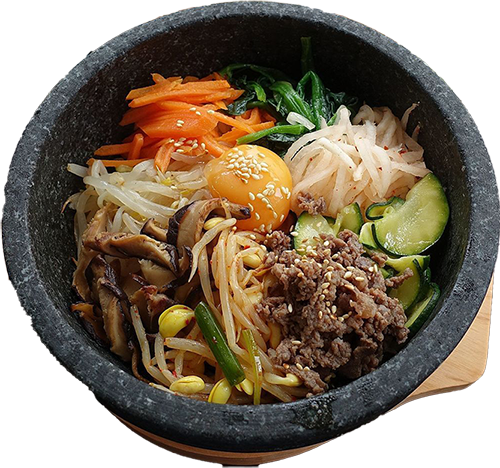

Bibimbap (Korean rice bowl with beef and vegetable)
비빔밥

Guilhem Vellut from Paris,
France, CC BY 2.0, via Wikimedia Commons
A recipe by
mykoreankitchen.com
Bibimbap (비빔밥) is probably one of the most well-known and beloved Korean dishes to many people. Even if people
don't know anything about Korea, it's not too difficult to find people who had bibimbap sometime in their lives.
Ingredients
Meat and meat sauce
- 100 g beef mince (3.5 ounces), (or other cuts)
- 1 Tbsp soy sauce
- 1 Tbsp sesame oil
- 1 tsp brown sugar
- 1/4 tsp minced garlic
Vegetables and other
- 250 g spinach (0.6 pounds)
- 350 g bean sprouts (0.8 pounds), You don't have to use them up if you think it's too much but I love having lots
of vegetables on my bibimbap!
- 100 g shiitake mushroom (3.5 ounces)
- 120 g carrots (4.2 ounces, 1 small)
- 1/2 tsp fine sea salt (1/4 tsp each will be used when cooking shiitake mushroom and carrots)
- 3 cups steamed rice (3 to 4 serving portions )
- 3 eggs (3 or 4 depending on the serving portion)
- Some cooking oil (to cook the meat, mushroom, carrots and eggs – I used rice bran oil)
- Some toasted seasoned seaweed shredded (long thin cut)
Bibimbap sauce - The below sauce might be only enough for 3 servings if you like eating it spicy.
- 2 Tbsp gochujang
- 1 Tbsp sesame oil
- 1 Tbsp sugar - I used raw sugar
- 1 Tbsp water
- 1 Tbsp toasted sesame seeds
- 1 tsp vinegar - I used apple vinegar
- 1 tsp minced garlic
Instructions
-
Prepare and cook ingredients as below.
- For meat, mix the beef mince with the meat sauce listed above. Marinate the meat for about 30 mins while
you are
working on other ingredients to enhance the flavour. Add some cooking oil into a wok and cook the meat on
medium
high to high heat. It takes about 3 to 5 mins to thoroughly cook it.
- Mix the bibimbap sauce ingredients in a bowl.
- Cook spinach and bean sprouts per linked recipe.
- Rinse, peel and julienne the carrots. Add some cooking oil and 1/4 tsp of fine sea salt in a wok and cook
the
carrots on medium high to high heat for 2 to 3 mins.
- Clean/rinse the shiitake mushrooms and thinly slice them. Add some cooking oil and 1/4 tsp of fine sea salt
in a
wok and cook the mushrooms on medium high to high heat until they are all cooked. (It takes 2 to 3 mins.)
- Make fried eggs. (While sunny side up is common, you can make them per your preference.)
- Put the rice into a bowl and add the meat, assorted vegetables, seasoned seaweed, bibimbap sauce, and the egg on
top of the rice. Serve.
- To eat, mix the ingredients in the bowl, and enjoy!
{kind=link}